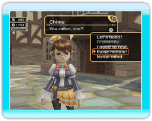

25
|
Moral |
 |
Puede que hayas observado que los ciudadanos relucen cuando el rey dedica algún tiempo a hablar con ellos.
 Esto indica que el ciudadano es feliz. Hacer felices a los ciudadanos hace subir el indicador de moral visible en la parte superior izquierda de la pantalla. Hay otras formas de aumentar la moral de los ciudadanos. Si los ciudadanos encuentran buenas ofertas en las panaderías y almacenes, o si cumples sus deseos, también subirá su indicador de moral. Cuando el indicador de moral se llena, obtienes ingresos adicionales que aparecen como "morale bonus" (bonificación de moral) en el informe financiero diario. Además, un indicador de moral lleno crea una esfera de moral, objeto que el rey puede utilizar para mejorar aún más su territorio. La cantidad de esferas de moral que puedes acumular aumenta con el número de panaderías y almacenes del territorio. |
● Uso de las esferas de moral
・Propagación de la moral Convoca a Chime cuando tengas una esfera de moral lista y eleva la moral de tus ciudadanos. Si hablas con la gente por la calle durante este periodo, podrás aumentar la felicidad de las familias. Al hablar con los aventureros durante este tiempo sus estadísticas también subirán temporalmente. ・Desarrollo del reino  Desde el menú del castillo puedes utilizar cierto número de esferas de moral para desarrollar el reino. Desde el menú del castillo puedes utilizar cierto número de esferas de moral para desarrollar el reino.Esta acción hará que aumente la prosperidad del territorio y te proporcionará acceso a más órdenes, así como a información sobre los deseos de tus ciudadanos. Si los satisfaces, darás aún más impulso a la moral. Hay otros beneficios añadidos al desarrollo del reino. ¡Mantén los ojos abiertos para verlos! |
● Frenesí de moral
El reino entra en un estado de frenesí de moral cuando los aventureros alcanzan sus objetivos en las mazmorras. Cualquier acción del rey para incrementar la moral de los ciudadanos proporciona bonificaciones de moral. Utiliza este estado para elevar aún más la moral. |
 |
 |
 |